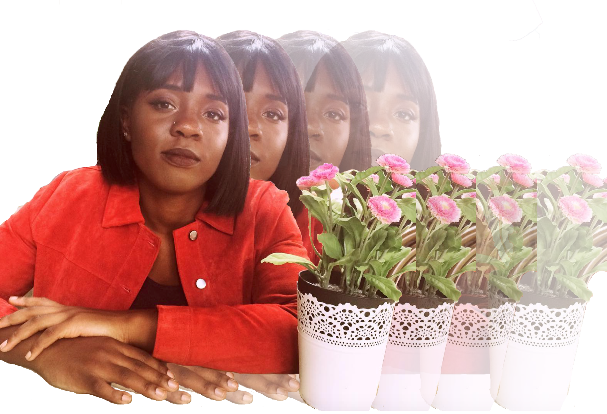

experience
EXPERIENCE
- Women's Campaign Disabilities Officer 2016-17
-
Newnham College BME Officer 2015-16
-
I have personal experience of the intermission process, as well as of the University Counseling Service and the Disability Resource Centre, so I have a good first-hand understanding of how these services operate, and what changes should be encouraged
back to main
